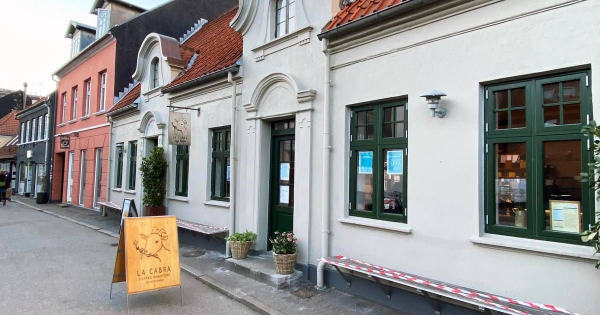

Aarhus C er en by med mange hyggelige kaffebarer, hvor du kan slappe af og nyde en god kop kaffe. Byen har et væld af forskellige kaffebarer, der tilbyder noget for enhver smag og præference.En af de mest populære kaffebarer i Aarhus C er La Cabra, som er kendt for sine specialkaffe fra hele verden og sin unikke atmosfære.
La Cabra er en kaffebar, der ligger i Latinerkvarteret i Aarhus, og den byder på verdensklasse kaffe, der serveres af prisvindende baristaer. Caféen har sit eget kafferisteri, hvor der sættes stor fokus på kvaliteten. Stedets autencitet skinner tydeligt igennem, og atmosfæren er afslappet og rolig. Besøgende kan slappe af i de komfortable møbler og nyde deres kaffe, mens de hører på musik fra kaffebarens grammofon, der spiller både moderne og klassisk musik. Derudover tilbyder kaffebaren også lækkert bagværk, der er bagt i deres eget bageri, hvis man skulle blive sulten.
Hvis du er en kaffeentusiast, så er Vestergade i Aarhus stedet, du ikke må gå glip af. Flere af byens bedste kaffebarer kan findes her, heriblandt Bill's Coffee. Her kan du slappe af og nyde din kaffe i de hyggelige omgivelser, eller tage din kaffe med dig, hvis du er på farten. Mens kager og bagværk også tilbydes, er det kaffen, der er i centrum og tiltrækker folk fra nær og fjern.
Bill's Coffee tilbyder både indendørs og udendørs siddepladser, og hvis du vælger det sidste, vil du befinde dig midt i en af Aarhus' ældste baggårde, hvilket giver en autentisk oplevelse. Kaffebønnerne kommer fra Sigfreds Kaffefabrik, og der er et stort og lækkert udvalg at vælge imellem. Hvis du vil tage nogle bønner med hjem og brygge din egen kaffe, kan du også købe kaffebønner her, og måske bruge en espressomaskine med kværn til at forbedre kaffeoplevelsen.
RS28 er en kaffebar i Aarhus, der er værd at besøge. Beliggende tæt på banegården, er det et must-see for kaffeelskere, der besøger byen. Lokalet er lille og hyggeligt og ligger i de samme lokaler som den tidligere Sigfreds Kaffebar. Selvom lokalet ikke er særligt stort, føles det ikke trangt, men derimod intimt med en hyggelig og afslappet atmosfære. Kaffebønnerne kommer fra det københavnske risteri The Coffee Collective, og kaffen er virkelig god. Hvis du bliver sulten, tilbyder RS28 også boller, croissanter og kager til din kaffe. Det er et perfekt sted at tage en pause eller arbejde på din laptop.
Stiller's Coffee er en kaffebar med en central placering i Aarhus. Den ligger i en baggård ved Klostergade i det gamle latinerkvarter, hvor atmosfæren er fantastisk. Indretningen er hyggelig og intim, men stadig moderne. Hos Stiller's Coffee kan man tydeligt mærke, at de lægger stor vægt på kvalitet. Kaffebønnerne ristes på deres eget risteri, så du kan følge processen fra bønne til kaffe. Derudover kan du også nyde forskellige lækkerier, hvis du bliver sulten.